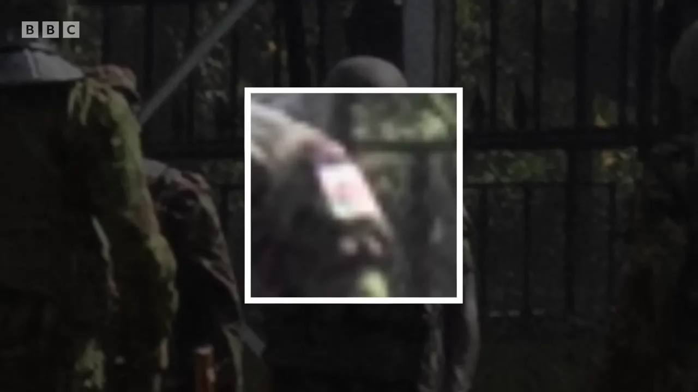

The day Kenya’s Gen Z livestreamed a revolution, three of them were shot dead at parliament. Their killers were caught on camera. Two years on, no one has been charged.
Scroll to follow the stream
LIVE2,48113:41:07
📍 Parliament Road, Nairobi
Ruto must go…♥
Stream interruptedConnection lost · 16:30
That afternoon, internet access across Kenya fell by up to half for about seven hours. Safaricom and Airtel blamed undersea cables. Independent researchers later found several hallmarks of a government-ordered shutdown. Rights groups have taken the case to court.
Livestream footage from 25 June 2024, via BBC Africa Eye. Messages are chants and words heard on footage that day.
By the end of the day, at least three people had been shot dead on the grounds of parliament.
Every moment was filmed. This is what the footage shows.
#OccupyParliament
Blood on the Bunge.
They went to parliament “as owners of the house.” They carried flags, phones and Bluetooth speakers. The police met them with tear gas, then water cannon, then rubber bullets — and finally live rounds. The president called the dead “organised criminals.” The footage they filmed of their own deaths says otherwise.
An interactive retelling of BBC Africa Eye’s investigation Blood Parliament, with reporting from the BBC, Al Jazeera, Amnesty International and the Kenya National Commission on Human Rights. Sources ↓
Content warning This story describes killings and includes images taken at the scene.
0photos & videos mapped by investigators
0images of a single shooting, cross-checked
0unarmed men killed at parliament
0security officers charged
I.“Tighten your belt”
In May 2024, President William Ruto’s government tabled its annual budget: the Finance Bill 2024. It aimed to raise $2.7bn in new revenue to cut Kenya’s reliance on foreign borrowing. “I am not going to preside over a bankrupt country,” Ruto said.
The bill reached into the shopping basket. It proposed VAT on bread, new duties on cooking oil and mobile-money transfers, and an “eco levy” that would raise the price of nappies and sanitary towels.
For a generation of young Kenyans — Gen Z, raised on TikTok and X, many of them unemployed — it was the last straw. “It’s already really hard for everyone as it is,” one protester told the BBC. “And the taxes are going to make life much harder for all of us.”
Protests on 18 and 20 June forced MPs to drop the taxes on bread, cooking oil and mobile money, and the eco levy. It was not enough: higher import duties and other measures stayed in. The organisers set a date to return: Tuesday 25 June, the day of the final vote. The target was parliament itself.
“For the first time it was the Kenyan people — the working class, the middle class and the lower class — against the ruling class.”
— Boniface Mwangi, activist
II.
The day, minute by minute
Investigators timed each photo and video using camera metadata, livestream timestamps and public clocks visible in the frame.
Inside, the speaker confirms a quorum for the bill’s final reading. Outside, the city is filling up. “It was a party. It was a beautiful party,” says Mwangi. “Kids came out with Bluetooth speakers and their water. It was a carnival, the entire city.”
100,000 on the streets
Crowds push towards Parliament Road from the east, north and west. Police hold three pinch points with tear gas, truncheons, water cannon and rubber bullets. Protesters climb onto the water cannon trucks. Arrests begin.
Driven back street by street, police mount a final defence at the north-eastern corner of parliament. They are surrounded.
Riot police charge protesters in central Nairobi.▶ 08:00
The bill passes
Ayes
195
Noes
106
Opposition MPs walk out. Word reaches the street in seconds. “Whatever happens,” says student journalist Ademba Allans, “we are going to enter the parliament and show the MPs that we believe in what we’re fighting for.”
The line breaks
Protesters break through and reach the road alongside parliament. An abandoned police truck is set alight. Fences come down, and for the first time protesters set foot on the grounds. Security forces quickly push them back — and police advance back up Parliament Road.
● FootageA police truck burns outside the parliament gates.▶ 17:02
“Uaa!”
On camera, a plain-clothes officer shouts the Swahili word for kill. A uniformed officer kneels into a firing position. Seven men fall. Two do not get up: David Chege and Ericsson Mutisya.
The killings don’t scatter the crowd — they galvanise it. Protesters tear down the fences and walk across the lawns, many with their hands raised. Warning shots ring out. They crouch, then keep going. Inside, doors are kicked in and part of the building is set on fire. The last MPs flee through tunnels and in ambulances. Within five minutes, the crowd begins to leave the way it came.
● Footage“We’ve entered!” Protesters film themselves at the gates.▶ 11:22
Shots on the way out
Gunfire again. Protesters tumble over the flattened fence. When the smoke clears, three bodies lie on the ground. Two are wounded. The third is Eric Shieni, 27, shot in the back of the head as he left.
Ruto thanks the security forces for their “defence of the nation’s sovereignty” and blames “a group of organised criminals” who had “hijacked” the protests. The Kenya National Commission on Human Rights later records 39 deaths and 361 injuries nationwide during the week of protests.
III.
Parliament Road
David Chege39 · Software engineer · Ran a Sunday schoolWore a purple hoodie. “Kind, humble, soft-spoken.”Ericsson Mutisya25 · ButcherStill in the white overalls he wore to work.
A photojournalist on the front line took a burst of pictures. He didn’t know it then, but he had captured the last three seconds of a man’s life.
Seven men were hit. Ademba Allans, the student journalist, ran towards them holding a Kenyan flag. “You are terrified. Maybe I’m the next person who’s going to get shot. But you have to help these people.” For two of them he was already too late.
“I saw Ericsson a few minutes before he died,” one witness told the BBC. “He died on the spot right next to me. What did he do wrong? Did he pose any threat?”
Case file 01 · The officer
Police advance up Parliament Road, seen from behind.▶ 17:15
The shooter knelt about 50 metres from the pair, with his back to every camera. To find him, investigators compared his gear with that of every officer at the scene:
Weapon type
Body armour
Riot shield
Headgear
An upturned neck guard
Only one officer matched. Video shot a minute later shows him again — and, in one frame, the click of his visor as he lowers it. Before he opened fire, he made sure to hide his face.
The man shouting “kill” was not as careful. The BBC named him as John Kaboi, a plain-clothes officer whom multiple sources place at Central Nairobi Police Station. He did not respond to the BBC. The uniformed shooter has not been named.
Friends carried Ericsson’s body to the southern gates of parliament. Through the bars, MP Babu Owino tried to console them. “These gentlemen were genuinely fighting for their lives,” he said. “I jumped across the gate to see if I could provide help, but this young man had lost his life.”
“Why did you kill us? Why did you kill peaceful protesters?”
— Protester interviewed in Blood Parliament
IV.
Who killed Eric Shieni?
Eric Shieni27 · Finance student, University of Nairobi
On a normal day, he’d have been at university. On 25 June he was at the front of the crowd: red top, black shorts, yellow gloves.
The gloves made him easy to follow through the footage, across the lawns and into parliament. When the crowd was spooked into a stampede on the way out, investigators lost him for a moment. They picked him up again at the exit — a last flash of his yellow gloves — and then he went down.
Shieni on the front line. “No jacket, but the gloves are the same. And the shorts match too.”▶ 22:04
Footage
Matte green helmetShoulder patchSolid-stock rifle, tan boots (matched in other frames)

BlackRedGreen
Scroll to scrub
00:00.0
● REC25.06.2024 15:04:00
15:04. Protesters are leaving the grounds when the shooting starts. “The video is very clear,” says Faith Odhiambo, president of the Law Society of Kenya. “The protesters were walking out of parliament. When the shooting starts, they were all running out.”
Keep scrolling to step through the footage, frame by frame.
In the chaos, a figure steps into frame on the far side of the lawn. “You could see he’s clearly aiming,” says Odhiambo. “He was aiming to kill.”
The BBC placed every image on a 3D model of parliament. Eric is the yellow figure at the exit. The shooter, in red, is about 25 metres away, and there’s no question where his rifle is pointing.
The shooter’s face can’t be seen. But his uniform gives him away. Investigators drew up a list:
White shoulder patch
Matte green helmet
Tan boots
Solid-stock rifle
They went through more than 150 images taken within ten minutes of the shooting. Many uniforms look alike: wrong headgear, no patch, a different rifle stock. Only one man matched every item on the list.
Seven minutes after the killing, a photographer caught his shoulder badge up close. It wasn’t white. It was a flag: black, red and green.
Only one part of Kenya’s security forces officially wears it when deployed at home. Several senior officers in the Kenya Defence Forces confirmed it to the BBC: the army.
“All our evidence points to one conclusion: this soldier killed Eric Shieni as he was running away.”
— BBC Africa Eye. The soldier has not been named. The KDF told the BBC that the police watchdog had not asked it to investigate any of its personnel.
“You have become the judge, the jury and the executioner for Eric.”
— Faith Odhiambo, President, Law Society of Kenya
V.26 June: “I concede”
The next afternoon the president backed down. “I run a government, but I also lead people. And the people have spoken,” he said on national television. “I concede. And therefore, I will not sign the 2024 Finance Bill.”
The bill the protesters had died to stop was dead. The question of who had killed them was left open.
“A single spark of defiance from these Gen Zs was able to change a whole trajectory of our country.”
VI.
Of 62 people killed in the 2024 protests, three cases have reached a courtroom.
Independent Policing Oversight Authority, statement of 22 June 2026
0deaths recorded during the 2024 protest periodKNCHR
0injuredKNCHR
0enforced disappearancesKNCHR
0people from 2024 still missingHuman Rights Watch, 2026
0death investigations still open, two years onIPOA, June 2026
After the film
Blood Parliament was released on 28 April 2025. A planned screening in Nairobi was cancelled, the BBC said, “due to pressure from the authorities.” A government spokesman called the film “one-sided”, and one MP called for the BBC to be banned. Amnesty International and the Kenya Human Rights Commission said the officers it identified should “face the law.” Senator Edwin Sifuna said there were no “fabrications” in it.
The police service told the BBC it “cannot investigate itself.” The army said no one had asked it to.
One year on
On 25 June 2025, thousands returned to the streets to mark the anniversary. Amnesty Kenya said 16 people were killed that day and around 400 injured, most of the deaths at the hands of police. In the protests that followed, through to mid-July, CIVICUS counted at least 65 more dead.
Two years on
On 25 June 2026, the authorities wrapped parliament in barbed wire. Families who came to lay flowers hung them on the wire instead. Among them was Caroline Mutisya.
“I came here today to remember my son, who was killed just 50 metres from parliament buildings. But I do not feel safe enough to express myself.”
— Caroline Mutisya, mother of Ericsson, outside parliament, 25 June 2026
Families did this outside parliament when they were kept from the building. Tap the wire, or the button. Every visitor sees the flowers left here.
In June 2026, the government announced a compensation scheme paying the families of those killed in protests about $23,000 each. Rights groups rejected it, citing excluded victims and a lack of transparency. Families said money was not the point.
“Even if you gave me 20 million, it won’t be enough compensation for the life of my son. What we want is accountability.”— James Otieno, father of Denzel Omondi, who was killed after the 2024 protests
VII.
Watch the investigation
Blood Parliament, BBC Africa Eye, 2025 · 37 minutes. Choose a chapter to jump to it.